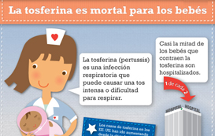
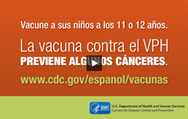

ShareCompartir
ShareCompartir
Sin las vacunas, las epidemias causadas por muchas enfermedades prevenibles podrían reaparecer y llevar a un aumento en el número de casos por enfermedad, discapacidad y muertes.
Aprenda sobre las vacunas y las enfermedades que previenen.
¿Quiénes deben vacunarse?
- Bebés y niños
Vacune a sus hijos para protegerlos contra enfermedades - Preadolescentes y adolescentes
¡Los preadolescentes y los adolescentes también necesitan vacunas! - Adultos
Los adultos también necesitan vacunarse
Calendarios de vacunación recomendados
Los calendarios listan la edad o rango de edades recomendados para la vacuna.
Otros recursos
- Declaración de información sobre la vacuna (VIS, por sus siglas en inglés). Este documento se distribuye a todos los receptores de la vacuna y explica los beneficios y riesgos de una vacuna.
- Recursos para profesionales de la salud (en inglés). Materiales impresos en español y herramientas para comunicarse con los padres y pacientes adultos acerca de las vacunas.
Información para padres
- Vacunas para niños sin seguro médico. El Programa de Vacunación para Niños (VFC) ayuda a los padres y tutores legales que no pueden pagar las vacunas.
- Consejos para que la cita de vacunación sea menos estresante [PDF - 135KB]
- Cómo sostener a su hijo durante las vacunaciones [PDF - 91KB]
- Sistema para Reportar Reacciones Adversas a las Vacunas (VAERS)
- Preguntas comunes sobre la vacunación de los bebés [PDF - 146KB]
- Consejos para que los padres hablen con sus hijos sobre la influenza [PDF - 670KB]
- Qué hacer si su niño contrae la influenza [PDF - 1MB]
- La influenza y usted [PDF - 3MB]
- Limpieza para ayudar a prevenir la influenza [PDF - 428KB]
Video: Visite al doctor
Vea este video que explica a los padres la importancia de la vacunación oportuna.

Infografía: Proteja a los bebés contra la tosferina
Es importante que las mujeres reciban la vacuna contra la tosferina en el tercer trimestre de cada embarazo.

Video: La vacuna contra el VPH es prevención del cáncer
El Dr. Azziz explica, como médico y como padre, por qué esta vacuna es tan importante.
Ayuda con formatos de archivos:
¿Cómo se visualizan los diferentes formatos de archivos (PDF, DOC, PPT, MPEG) en este sitio?- Esta página fue revisada el: 02 de septiembre de 2014
- Esta página fue modificada el: 02 de septiembre de 2014
- Fuente del contenido: